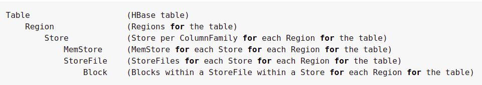
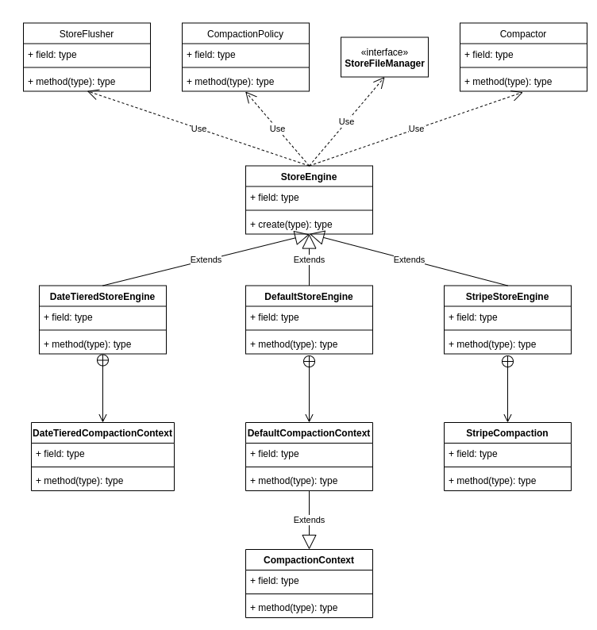
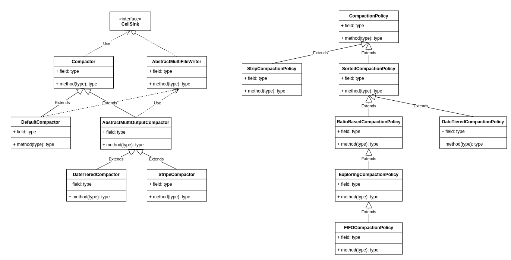
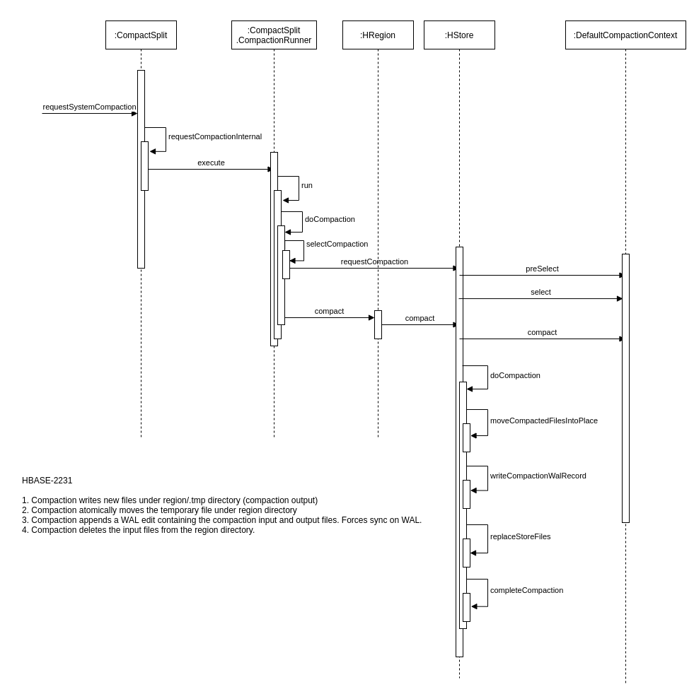

Compaction涉及到的模块说明
Compaction种类

Compaction会从一个region的一个store中选择一些hfile文件进行合并。合并说来原理很简单，先从这些待合并的数据文件中读出KeyValues，再按照由小到大排列后写入一个新的文件中。之后，这个新生成的文件就会取代之前待合并的所有文件对外提供服务。HBase根据合并规模将Compaction分为了两类：MinorCompaction和MajorCompaction。
Minor Compaction
选取一些小的、相邻的StoreFile将他们合并成一个更大的StoreFile，在这个过程中不会处理已经Deleted或Expired的Cell。一次Minor Compaction的结果是更少并且更大的StoreFile。
Major Compaction
将所有的StoreFile合并成一个StoreFile，这个过程还会清理三类无意义数据：被删除的数据、TTL过期数据、版本号超过设定版本号的数据。另外，一般情况下，Major Compaction时间会持续比较长，整个过程会消耗大量系统资源，对上层业务有比较大的影响。因此线上业务都会将关闭自动触发Major Compaction功能，改为手动在业务低峰期触发。
Compaction的流程介绍

Compaction的整个流程中涉及到了非常重要的几个组件，StoreEngine，CompactionContext，CompactionPolicy，Compactor。


CompactionContext决定了StoreFile的选取策略(CompactionPolicy)，也决定了StoreFile的合并策略(Compactor)。而CompactionContext最终由StoreEngine初始化（读取配置，通过反射的方式创建对应的类）。
|
|

CompactionContext是个抽象类，有三个非常重要的方法preSelect，select，compact。
preSelect方法在coprocessor的preCompactSelection方法之间调用，主要是为coprocessor过滤一些storefile（比如排除掉那些明显本次就不会被compac的文件）。 select方法由compaction选择文件时调用，一般会依赖具体的算法实现，最后与compact方法配合使用。
Compaction触发时机
HBase 中可以触发 compaction 的因素有很多，最常见的因素有这么三种: MemStore Flush、后台线程周期性检查、手动触发。
MemStore Flush
应该说compaction操作的源头就来自flush操作，memstore flush会产生HFile文件，文件越来越多就需要compact。因此在每次执行完Flush操作之后，都会对当前Store中的文件数进行判断，一旦文件数大于等于 hbase.hstore.compactionThreshold ，就会触发compaction。需要说明的是，compaction都是以Store为单位进行的，而在Flush触发条件下，整个Region的所有Store都会执行compact，所以会在短时间内执行多次compaction。
后台线程周期性检查
后台线程CompactionChecker定期触发检查是否需要执行compaction，检查周期为：hbase.server.thread.wakefrequency * hbase.server.compactchecker.interval.multiplier。和flush不同的是，该线程优先检查文件数是否大于 hbase.hstore.compactionThreshold，一旦大于就会触发compaction。如果不满足，它会接着检查是否满足major compaction条件，简单来说，如果当前store中hfile的最早更新时间早于某个值mcTime，就会触发major compaction，HBase预想通过这种机制定期删除过期数据。
手动触发
一般来讲，手动触发compaction通常是为了执行major compaction，原因有三
- 其一是因为很多业务担心自动major compaction影响读写性能，因此会选择低峰期手动触发；
- 其二也有可能是用户在执行完alter操作之后希望立刻生效，执行手动触发major compaction；
- 其三是HBase管理员发现硬盘容量不够的情况下手动触发major compaction删除大量过期数据；
无论哪种触发动机，一旦手动触发，HBase会不做很多自动化检查，直接执行合并。
选择合适HFile合并
RatioCompactionPolicy
从老到新逐一扫描所有候选文件，满足其中条件之一便停止扫描：
当前文件大小 < 比它更新的所有文件大小总和 * ratio，其中ratio是一个可变的比例，在高峰期时ratio为1.2，非高峰期为5，也就是非高峰期允许compact更大的文件。那什么时候是高峰期，什么时候是非高峰期呢？用户可以配置参数hbase.offpeak.start.hour和hbase.offpeak.end.hour来设置高峰期当前所剩候选文件数 <= hbase.store.compaction.min（默认为3），停止扫描后，待合并文件就选择出来了，即为当前扫描文件+比它更新的所有文件
ExploringCompactionPolicy
该策略思路基本和RatioBasedCompactionPolicy相同，不同的是，Ratio策略在找到一个合适的文件集合之后就停止扫描了，而Exploring策略会记录下所有合适的文件集合，并在这些文件集合中寻找最优解。最优解可以理解为：待合并文件数最多或者待合并文件数相同的情况下文件大小较小，这样有利于减少compaction带来的IO消耗。
StripCompactionPolicy
用户自定义Policy
挑选合适的执行线程池
HBase实现中有一个专门的线程CompactSplitThead负责接收compact请求以及split请求，而且为了能够独立处理这些请求，这个线程内部构造了多个线程池：largeCompactions、smallCompactions以及splits等，其中splits线程池负责处理所有的split请求，largeCompactions和smallCompaction负责处理所有的compaction请求，其中前者用来处理大规模compaction，后者处理小规模compaction。
注意
- 待compact的文件总大小如果大于值throttlePoint（可以通过参数hbase.regionserver.thread.compaction.throttle配置，默认为2.5G），分配给largeCompactions处理，否则分配给smallCompactions处理。所以并不是largeCompactions就处理Major Compaction，而smallCompactions就去处理Minor Compaction。
- largeCompactions线程池和smallCompactions线程池默认都只有一个线程，用户可以通过参数hbase.regionserver.thread.compaction.large和hbase.regionserver.thread.compaction.small进行配置
HFile文件合并
上文一方面选出了待合并的HFile集合，一方面也选出来了合适的处理线程，万事俱备，只欠最后真正的合并。合并流程说起来也简单HBASE-2231，主要分为如下几步：
- 分别读出待合并hfile文件的KV，并顺序写到位于RegionName/tmp目录下的临时文件中
- 将临时文件移动到对应region的数据目录
- 将compaction的输入文件路径和输出文件路径封装为KV写入WAL日志，并打上compaction标记，最后强制执行sync
- 将对应region数据目录下的compaction输入文件全部删除
注意
上述四个步骤看起来简单，但实际是很严谨的，具有很强的容错性和完美的幂等性：
- 如果RS在步骤2之前发生异常，本次compaction会被认为失败，如果继续进行同样的compaction，上次异常对接下来的compaction不会有任何影响，也不会对读写有任何影响。唯一的影响就是多了一份多余的数据。
- 如果RS在步骤2之后、步骤3之前发生异常，同样的，仅仅会多一份冗余数据。
- 如果在步骤3之后、步骤4之前发生异常，RS在重新打开region之后首先会从WAL中看到标有compaction的日志，因为此时输入文件和输出文件已经持久化到HDFS，因此只需要根据WAL移除掉compaction输入文件即可